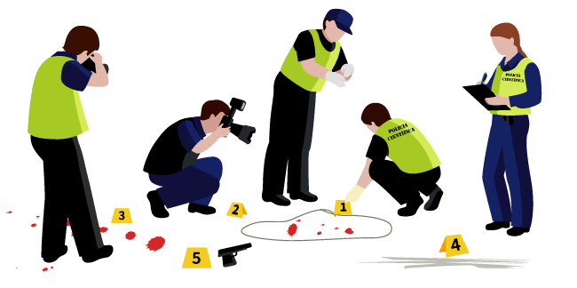

A perícia criminal é atividade típica de Estado, de cunho técnico-científico, prevista no Código de Processo Penal, que visa a analisar vestígios, sendo indispensável para elucidação de crimes.
A atividade é exercida pelo perito oficial, responsável pela produção da prova material, consubstanciada em laudo pericial, após a devida identificação, coleta, processamento e correta interpretação dos vestígios dentro dos limites estabelecidos pela ciência.
Os concursos para perito criminal exigem que os candidatos tenham diploma de nível superior, sem especificação clara.
Em alguns institutos de Polícia Civil há uma convocação de cargos por área do conhecimento. Nestes casos, a maioria deles pede formação em determinadas áreas, geralmente dentro do campo da tecnologia e das biociências.
A carreira de perito criminal apresenta desafios diários. É difícil falar sobre uma rotina quando a profissão é baseada em eventos diferentes: para cada novo crime, novas possibilidades surgem e o perito deve estar pronto para se adaptar às necessidades do trabalho.
Ficou com dúvida?
